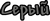
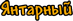

Цветовые категории вещей в игре
Вы построили дом, скорее всего поселили в него первого NPC, теперь пора — исследовать мир собирая различный лут. Каждая полученная вами вещь при исследовании мира, имеет свою категорию(редкость). Для удобства, разработчики сделали так, чтобы названия выделялось определённым цветом, которое и будет означать пренадлежность к той или иной категории, полученного вами лута за время, проведённое в игре.
Редкость (Rarity) — это мера того, насколько сложно получить тот или иной предмет. Цвет названия предмета определяет, насколько он ценный. Цвет названия товара меняется от белого, являющегося наиболее распространённым, до фиолетового, самого редкого. Для получения 11 уровня вещей нужен НИП гоблин-инженер. Любая вещь с названием белого или серого цвета уничтожается при соприкосновении с лавой (исключениями являются: обсидиан, глиняный горшок, огнецвет и его семена).
Вещи в игре, делятся на множество цветовых категорий, рассмотрим каждый из них:
 — Слабые вещи, ухудшенные негативными модификациями. Они получаются, при случайном ухудшении вещей у гоблина инженера и являются самыми слабыми вещами в игре. А так же мусор, получаемый во время рыбалки.
 — Все основные вещи, попадают под эту базовую категорию. Они не являются чем-то стоящим, но могут послужить небольшим заработком в начале игры. Почти все они сгорают в лаве, однако есть несколько исключений, указанных выше.
— Все основные вещи, попадают под эту базовую категорию. Они не являются чем-то стоящим, но могут послужить небольшим заработком в начале игры. Почти все они сгорают в лаве, однако есть несколько исключений, указанных выше.
 — Вещи, которые нельзя изготовить, также могут являться синими, например, шар боли. Оружие и броня, сделанные из ранних руд. Некоторые аксессуары, такие как, кандалы или счастливая подкова , тоже могу синей редкости. Вещи которые нельзя изготовить, так же могут являться синими, например шар боли.
— Вещи, которые нельзя изготовить, также могут являться синими, например, шар боли. Оружие и броня, сделанные из ранних руд. Некоторые аксессуары, такие как, кандалы или счастливая подкова , тоже могу синей редкости. Вещи которые нельзя изготовить, так же могут являться синими, например шар боли.
 — Вещи, которые в большинстве своём не изготавливаются. Исключениями являются: некро-броня, песочная пушка, солнечные очки, обсидиановый череп, звездная пушка, алмазный посох, алмазная роба. Начиная с этой редкости, вещи не сгорают в лаве.
— Вещи, которые в большинстве своём не изготавливаются. Исключениями являются: некро-броня, песочная пушка, солнечные очки, обсидиановый череп, звездная пушка, алмазный посох, алмазная роба. Начиная с этой редкости, вещи не сгорают в лаве.
 — Оружие и броня, созданные из адского камня. Вещи, связанные с джунглями (кроме семян джунглей), а также найденные в сундуках в аду, являются оранжевыми. Также оружия и аксессуары, которые невозможно изготовить, такие как - посох травы, звериные когти или тёмная пика. Также все хардмодные руды: кобальт, мифрил, адамантит и их аналоги.
— Оружие и броня, созданные из адского камня. Вещи, связанные с джунглями (кроме семян джунглей), а также найденные в сундуках в аду, являются оранжевыми. Также оружия и аксессуары, которые невозможно изготовить, такие как - посох травы, звериные когти или тёмная пика. Также все хардмодные руды: кобальт, мифрил, адамантит и их аналоги.
— Вещи из хардмодных руд, редкие вещи.
— Мощные и редкие предметы. Таковыми являются огнемёт или цепь Инь-Ян. Большинство таких вещей делаются из редких дропов и материалов. Этот цвет может быть легко спутан со следующим.
— Это улучшенные вещи Розового и Светло-красного цвета. В эту категорию попадают редкие вещи хардмода, например, посох отравления.
— Предметы, которые лучше святых, хлорофит и предметы из него, а также лучшие предметы из версии 1.1 с очень хорошей заточкой, например легендарный Экскалибур. Лаймовой редкостью обладают сильные аксессуары, объединяющие свойства других аксессуаров с меньшей редкостью (щит Анх, огненная рукавица, ботинки хождения по лаве).
— Лучшие предметы которые можно получить легально в версии 1.2 — эктоплазма, терра-меч.
— Улучшенное оружие Желтого и Лаймового уровня лучшими заточками, также снаряжение разработчиков и некоторые вещи из фрагментов небесных башен.
— Предметы, созданные из фрагментов, дроп с Лунного Лорда, а также предметы Жёлтого уровня редкости с самыми лучшими модификаторами.
— Улучшенные предметы красного качества.
— Эту редкость, имеют только сумки с сокровищами и вещи, выпадающие только с них, например, Щит Ктулху. Доступны только в режиме эксперта.
 — Эту редкость, имеют странные растения и квестовые рыбы от рыбака.
Также, игроку нужно знать, что редкость вещей зависит от их модификации. Вещи с положительными модификациями будут иметь большую редкость, чем обычные, не модифицированные. Вещи с отрицательными модификациями будут иметь меньшую редкость.
Примечания
Вещи Янтарной редкости можно обменять у НИПов на более важные вещи, а Радужной можно получить только в режиме эксперта при убийстве боссов.
На первых порах игры, желательно найти следующее оружее, дабы оно будет эффективным по наносящему урону и прочим характеристикам — это бумеранг, лук и копьё. Ещё есть такие вещи, как Аркалис и Зачарованный меч. Фейк-меч золотистого цвета, а другие – разноцветные. Из разноцветного, падает один из этих мечей.